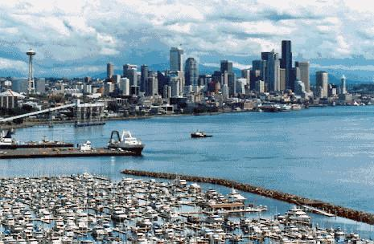

Seattle, nicknamed the Emerald City for its greenery, is located in one of the prettiest part of United States, the Pacific Northwest. Seattle and the region has a rich cultural side as well as an enchanting outdoor side. Flanked by the Puget Sound on the West and the Cascades on the East, Seattle offers a wide variety of experiences to its visitors and residents.
Weather
The weather in May/June is usually pleasant (50-70F
or 11-24C) though it might rain occasionally (current
weather). The common myth is that it
rains a lot in Seattle. The truth is more
like it drizzles a lot in Seattle (average June rainfall 1.5 inches).
Seattle sells more sunglasses per person
than any other U.S. city.
Dining
Seattle offers a rich selection of dining experiences.
Some of the best seafood places are blocks away from the Seattle Center
(conference venue). If you plan on having a lunch or dinner at the
rotating restaurant on the Space Needle make your reservation now
(1-800-937-9582 or 206-443-2150).
Things one could do in Seattle
The Seattle Center also houses the Seattle Symphony,
NorthWest Opera, Seattle Reportory Theatre, Pacific Science Center, Seattle
SuperSonics (Key Arena), Big Band Dances, NorthWest Folklife museum, the
Space Needle, 19 restaurants and several retail shops.
For short outings in Seattle consider: